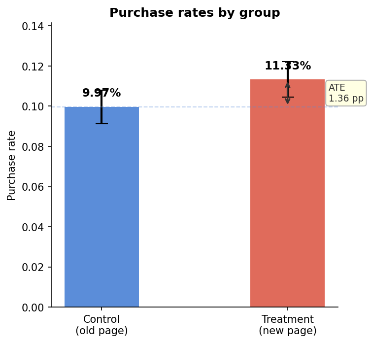
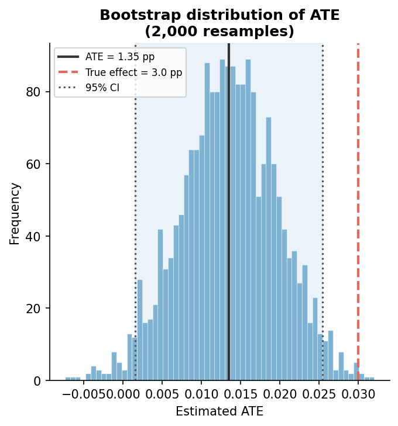
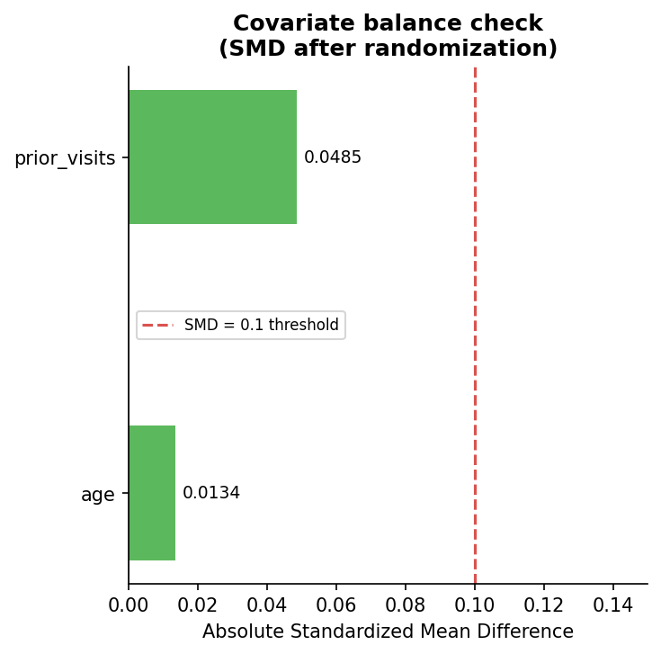

Why A/B Testing is the Gold Standard — and What Breaks When You Can't Use It
Before learning four causal methods, you need to understand the one method that needs no assumptions. Then you need to see it fail. That's what this phase is about.
Start with a question, not a method
Your team redesigned a product page. Someone in a Monday meeting says "let's check if the new page performs better." You pull a report showing users who saw the new page converted at 13%, versus 10% for the old page. A three percentage point lift. Ship it?
Not yet. That 3pp difference has two possible explanations: the new design caused more purchases, or the users who happened to see the new design were already more likely to buy. You cannot tell which is true from that number alone. This is the fundamental problem of causal inference — and it comes up in every business decision involving data.
"Randomization doesn't just control for confounders you can think of. It controls for confounders you haven't thought of yet."
What makes an A/B test causal
An A/B test is a Randomized Controlled Trial (RCT). You randomly assign each user to either the old page (control) or the new page (treatment). The word "randomly" is doing enormous work here.
When assignment is truly random, every characteristic of a user — their age, their purchase history, their device, their income, their mood — is equally distributed across both groups in expectation. The treated and control groups are statistically identical before the experiment starts. So any difference in outcomes afterwards can only come from one place: the thing you changed.
This is why the naive mean difference is the causal effect in a proper A/B test:
No adjustment. No modeling. No assumptions beyond "the randomization actually worked." This simplicity is the gold standard everyone else is trying to approximate.
The estimand: ATE
We're estimating the Average Treatment Effect (ATE) — the average causal effect across the entire user population, both those who would be treated and those who wouldn't. Formally:
Where Y(1) is a user's outcome if they see the new page, and Y(0) is their outcome if they see the old page. The problem: you never observe both for the same user. Randomization lets you reconstruct this average across groups.
Building the dataset
We simulate 10,000 users with a known true effect of exactly 3 percentage points. Crucially, we also include covariates — age, device type, prior visits — that will become confounders in Phase 3 (PSM). This is intentional: one dataset, used across multiple phases, each time exploiting different structure.
TRUE_EFFECT = 0.03 # 3pp lift — the answer we want to recover # Random assignment — the core of an A/B test treatment = np.random.binomial(1, 0.5, N) # Outcome probability — treatment adds 3pp on top of covariates log_odds = ( -2.5 + TRUE_EFFECT * 4 * treatment + 0.02 * (age - 35) + 0.05 * prior_visits ) purchased = np.random.binomial(1, sigmoid(log_odds), N)
The DGP (data generating process) is the true model that created your data. In real life you never know it. Here you do — which is what makes simulation so powerful for learning. Your estimator should recover 0.03.
Three estimators, same answer
We estimate ATE three different ways — not because we need to, but to build intuition for what an estimator actually is. In a proper RCT, all three converge on the same number.

Confidence intervals: analytical vs bootstrap
A point estimate without an interval is incomplete. We compute CIs two ways: analytically (from OLS standard errors, assumes normality) and via bootstrap (model-free, resamples data 2,000 times). Both give similar results because our sample is large. The bootstrap becomes essential in smaller samples or non-standard estimands.

The most important cell: breaking the experiment
We deliberately remove randomization and re-run the same analysis. Younger, more engaged users now self-select into the treatment group. The naive estimate inflates to roughly 6–8 percentage points — more than double the true 3pp effect. The SMD (Standardized Mean Difference) on age and prior visits jumps from near zero to 0.3+.
This is not a hypothetical. This is exactly what the LaLonde dataset in Phase 2 looks like. Workers who chose to enroll in job training were already different from those who didn't. The naive estimate is biased by exactly this mechanism.
"Without randomization, the naive estimate was 2× the true effect. That's not noise — that's selection bias, and it will mislead every decision made from it."

Where the gold standard breaks down
Randomization eliminates confounders — but only if the experiment is run correctly. In practice, A/B tests fail more often from execution mistakes than from bad statistical design. These are the four ways a well-intentioned experiment produces a wrong answer.
1. Peeking — stopping the experiment early
You launch a test, check the dashboard two days later, see p=0.03, and stop. The problem: p-values are designed to be interpreted at a single pre-specified sample size. Checking repeatedly — at day 1, day 2, day 3 — gives you multiple chances to cross the significance threshold by random chance. With 20 peeks, your actual false positive rate climbs from 5% to roughly 40%. You ship a change that did nothing, or worse, harmed users, with the full confidence of a "statistically significant" result.
The fix: commit to a sample size before the experiment starts and don't stop early. If your team genuinely needs continuous monitoring, use sequential testing methods — always-valid p-values or Bayesian frameworks — which are designed for this use case.
2. Insufficient power — not knowing your sample size
An underpowered experiment produces false negatives: your test finds "no effect" and you don't ship a change that would have genuinely helped users. Power analysis answers a single question — how many users do I need? — and requires four inputs you should know before touching any data: baseline conversion rate, minimum detectable effect (the smallest lift you'd actually care about), significance level (α, usually 0.05), and desired power (1−β, usually 0.80).
These four inputs produce a required sample size per group. The practical failure: teams skip this step, run a test for one week because that feels right, and conclude "no effect" from a sample that was never large enough to detect one. An underpowered non-result is not a result.
3. P-hacking and multiple comparisons
You designed the experiment to measure purchase rate. But your dashboard shows 15 metrics. Three are significant. You report those. This is p-hacking — not necessarily malicious, but statistically identical to running 15 experiments and showing the best result. At α=0.05, you expect one false positive for every 20 tests by pure chance. With 15 metrics, the probability of at least one spurious significant result is around 54%.
The fix: pre-register your primary metric before the experiment starts. That's the one that drives the shipping decision. Secondary metrics are exploratory — they generate hypotheses for future tests, not conclusions from this one. When you do need to test multiple metrics formally, apply Bonferroni correction (divide α by the number of tests) or Benjamini-Hochberg (controls false discovery rate, less conservative). Your analysis plan should exist before you see the data.
4. Novelty effects — users responding to change, not improvement
Your new design shows a 3pp lift in week one. You ship it. Two months later, conversion is back to baseline. What happened: users clicked the new design because it was different — not because it was better. The novelty wore off. The A/B test captured a real short-term effect that wasn't the long-term effect you cared about.
Novelty effects are most common with UI changes — new layouts, colors, navigation patterns — and less common with structural changes like pricing or checkout flow, where users engage with the mechanism rather than noticing something different. The diagnostic: segment your treatment effect by how long a user has been in the experiment. If new entrants show a large effect and users who've been in the test for two or three weeks show near zero, you're likely measuring novelty. The fix is usually to run the experiment longer — but this requires having done the power analysis first, so you knew how long "long enough" was before you started.
What you should take from Phase 1
Randomization is the only method that requires no assumptions about confounders — because it eliminates them by design. Every other method in this series is an attempt to approximate randomization when it's unavailable. DiD uses time variation. PSM uses observed covariates. Synthetic Control uses donor units. RD uses a threshold. Each approach makes a different assumption, and each assumption can be tested — but none of them is as clean as what you built here.
The discomfort you felt in the "broken experiment" cell — that feeling of not knowing whether your estimate is real — is what motivates the next four phases.